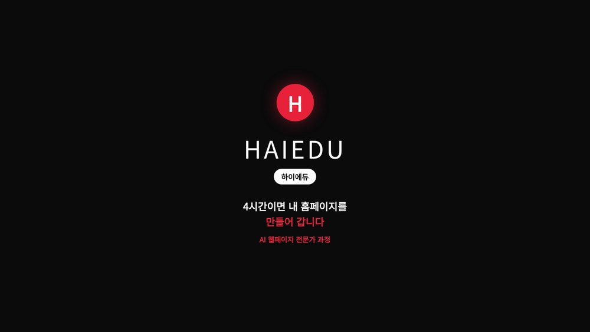
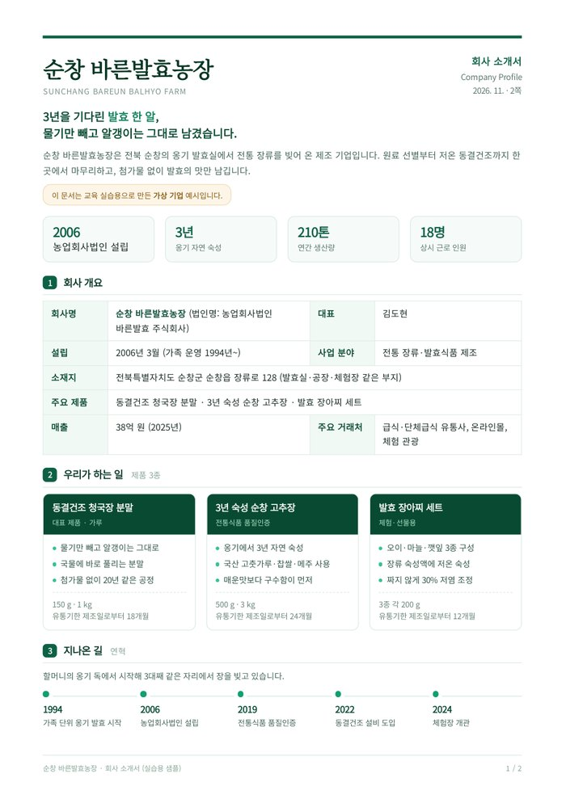

Result 01 · 피클
이미지 4장 + 12초 숏폼 + GIF
훅·쓰임·특징·마무리 네 컷을 만들고, 이어 붙여 음악까지 넣습니다. GIF는 카카오톡·부스 화면용.
1080×1920 · 음악 포함네 시간 동안 도구를 네 번 바꿉니다. 피클로 장면을 만들고, 클로드와 vStory로 말을 붙이고, 제미나이로 우리 회사 앱과 회사 소개 영상을 뽑습니다. 하실 일은 복사해서 붙여넣기, 그리고 고르기 — 두 가지입니다.
수업 전에 해 두실 일은 두 가지입니다. ① 폰에 피클 앱 설치(강사 초대 링크로 입장) ② 클로드·vStory·제미나이에 평소 쓰시는 계정으로 로그인. vStory는 무료 베타라 결제 정보가 필요 없습니다.
제품 이미지 4장을 만들고, 이어 붙여 12초 숏폼·GIF·배경음악까지 한 번에.
초대 링크·QR은 수업 시작 때 안내클로드로 움직이는 카드 3장을 만들고, vStory가 목소리·자막·음악을 붙여 20–30초 영상으로 조립합니다.
vStory는 무료 베타 · 결제 정보 불필요우리 회사 홍보 웹앱을 만들고, 폰 크롬으로 열어 홈 화면에 추가합니다.
입력창 아래 [Canvas] 또는 ＋ → Canvas회사 소개서·브로슈어를 넣으면 동영상 개요 1편과 슬라이드 1벌이 나옵니다.
구 NotebookLM → 2026. 7. 이름 변경피클은 휴대폰 앱입니다(PC 웹 화면 없음). 초대 링크로 가입을 마치면 초대한 사람과 받은 사람 모두 전체 초기화 티켓을 받습니다. 4교시 노트북은 PC 웹으로 하십시오 — 모바일 앱은 동영상·슬라이드가 제한됩니다.
같은 회사, 같은 제품인데 네 가지 모습이 됩니다. 무엇을 만들까가 아니라 이 일은 어느 도구가 잘하는가를 가져가십시오.
훅·쓰임·특징·마무리 네 컷을 만들고, 이어 붙여 음악까지 넣습니다. GIF는 카카오톡·부스 화면용.
1080×1920 · 음악 포함움직이는 카드 3장에 한국어 목소리와 자막이 붙은 영상. 1교시 장면과 같은 회사인데 말이 생깁니다.
MP4 · 9:16 · AI 목소리회사 정보를 넣으면 숏폼 대본·이미지 프롬프트·SNS 문구가 나오는 웹앱. 앱스토어 없이 홈 화면에 놓습니다.
공유 링크 + 홈 화면 아이콘회사 자료를 넣어 만든 소개 영상과 발표 자료. 슬라이드는 12초 숏폼으로 한 번 더 돌려 씁니다.
MP4 · PDF/PPTX네 칸(업종·회사명·제품명·핵심 특징)을 채워 AI에게 일을 정확히 맡긴다.
지금 필요한 일이 장면인지, 말인지, 도구인지, 자료 요약인지 가려 도구를 고른다.
한 도구의 결과물을 다음 도구의 재료로 넘긴다 — 이미지 → vStory, 슬라이드 → 숏폼.
글자·숫자·제품 모양을 직접 확인하고, 결제·예약·전화 앞에서 멈춘다.
쉬는 시간은 따로 두지 않고 각 교시 마지막 3–4분을 정리 겸 스트레칭으로 씁니다. 각 단계에서 쓰는 프롬프트는 프롬프트 라이브러리에서 번호로 찾아 복사하시면 됩니다.
프롬프트 22종 — K1–K10(피클) · C1–C4(클로드·vStory) · B1–B4(제미나이 캔버스) · N1–N4(제미나이 노트북).
전부 독립형이라 앞 단계 결과를 보지 않아도 그대로 작동합니다. [ ] 안만 우리 회사 정보로 바꾸면 됩니다.
1회차 자료(슬라이드 48장·프롬프트 30종)는 그대로 남아 있습니다 — 위 회차에서 1회차를 누르면 다시 보실 수 있습니다.
오늘 만든 것은 회사 이름을 달고 나갑니다. AI가 만든 문장이라도 책임은 회사에 있습니다. 게시·공유 전에 이 세 가지만 확인해 주세요.
AI의 점검(검수 프롬프트)은 표현 점검이지 법률 검토가 아닙니다. 판단이 어려운 것은 ‘확인 필요’로 남기고, 최종 확인은 회사(또는 담당 전문가)가 합니다. 세부 기준은 업종마다 다릅니다.
바로 보기는 새 창으로 열리고, 내려받기는 내 기기에 저장됩니다. 교육이 끝난 뒤에도 다시 보실 수 있습니다.
1교시 4컷 프롬프트로 만든 결과 예시입니다. 재생 버튼을 누르면 이 화면에서 바로 돌아가고, 내려받아 수강생에게 보여 줄 수도 있습니다.
상단 훅 제목 → 네 컷 왼쪽 스와이프 → 컷별 핵심 자막 → 하이에듀 엔딩 카드. 같은 4컷이라도 자막·전환·음악을 얹으면 이만큼 달라진다는 것을 보여 주는 완성본입니다.
내려받기지친 아침 → 이슬 맺힌 원료 → 제품 클로즈업 → 주방에서 한 잔. 네 컷이 3초씩 이어집니다.
내려받기카페 구석의 답답함 → 통창 사무실 → 회의실 협업 → 라운지의 여유. 네 컷이 3초씩 이어집니다.
내려받기만드는 문장은 프롬프트 페이지 맨 앞의 4컷 이미지 프롬프트에 있고, 만든 사진 4장을 이어 붙이는 문장은 K8에 있습니다.
2교시 클로드 카드(C1)를 한 단계 넓힌 견본입니다. ‘하이에듀 · AI 웹페이지 전문가 과정’ 홍보용으로 9개 장면이 저절로 넘어가며 글자·도형이 움직입니다. 새 창에서 화면을 한 번 누르면 소리와 함께 처음부터 재생됩니다.

새 창에서 재생사진 3장에 vStory의 AI 스토리(계절 캐릭터)와 목소리·자막을 붙인 결과입니다. 재생 버튼을 누르면 이 화면에서 바로 돌아갑니다. 계절 캐릭터를 끄면 담백한 회사 소개 영상이 됩니다.
수강생이 만들 ‘숏폼·홍보 문구 생성기’의 완성 화면입니다. 내려받아 열면 인터넷 없이도 그대로 동작합니다.
3교시 B1 문장을 제미나이 캔버스에 넣어 만든 앱 견본입니다. 예시 채우기 → 만들기를 누르면 숏폼 대본·이미지 프롬프트·SNS 문구·한 줄 요약이 한 번에 나옵니다. 버튼을 누르면 새 창에서 바로 써 볼 수 있습니다.
회사 소개서를 노트북 왼쪽 [소스]에 넣고 오른쪽 [스튜디오] → [동영상 개요]를 누르면 이 영상이 나옵니다. 종이를 오려 붙인 콜라주 그림체에 한국어 해설과 자막이 붙습니다. 오른쪽 샘플 회사소개서가 4교시 실습에서 쓰는 소스입니다.
소스만 넣으면 이 영상이 통째로 나옵니다. 무료 계정은 하루 3회, 유료는 6회(Plus)·20회(Pro)까지 만들 수 있습니다.
내려받기
노트북 [소스]에 올릴 자료입니다. 이 PDF 하나로 동영상 개요와 슬라이드 자료를 모두 만들어 봅니다.
4교시 진행 순서는 슬라이드 47~50쪽에 있고, 만드는 문장은 N1(동영상 개요)·N2(슬라이드)에 있습니다.
11. 27. 2회차에 띄우는 슬라이드 63장입니다. 교시별 화면과 프롬프트, 주의사항을 순서대로 담아 수업 뒤 복습용으로도 쓰실 수 있습니다.
2회차 전체 진행표(60분 × 4교시)와 프롬프트 22종, 도구별 비상 대응까지 담은 강사용 교안입니다.
피클 60분의 진행 순서·프롬프트·검수 기준과, 생성이 막힐 때의 대응을 자세히 담았습니다.
제미나이 캔버스로 앱을 만드는 순서와 복사용 프롬프트, 폰 홈 화면에 추가하는 4단계를 한 파일에 담았습니다.
1회차(11. 20.)에 띄운 슬라이드 48장입니다. Flow·CapCut 5단계를 다시 확인할 때 보세요.
오늘 만든 영상·GIF·앱 링크를 패들렛에 올려 주세요. 같은 자리에서 옆자리 결과물도 함께 볼 수 있습니다.
게시판 오른쪽 아래(휴대폰에서는 화면 아래)의 ＋ 버튼을 누릅니다. 오늘은 수정자료 칸을 씁니다.
제목 칸에 회사명 또는 닉네임과 무엇을 만든 것인지(숏폼·GIF·앱)를 적습니다.
영상(mp4)·GIF·슬라이드(PDF)를 올리고, 앱은 공유 링크를 붙여 넣습니다. 게시를 누릅니다.